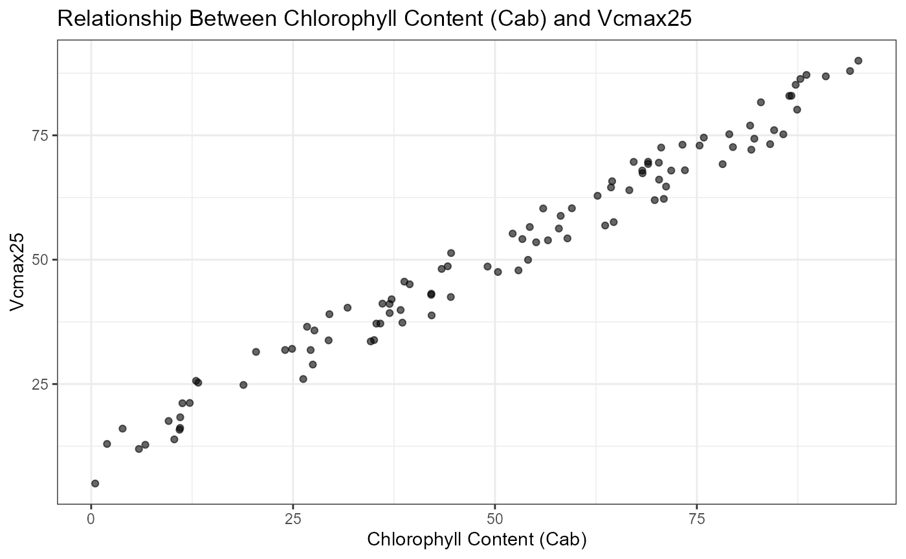
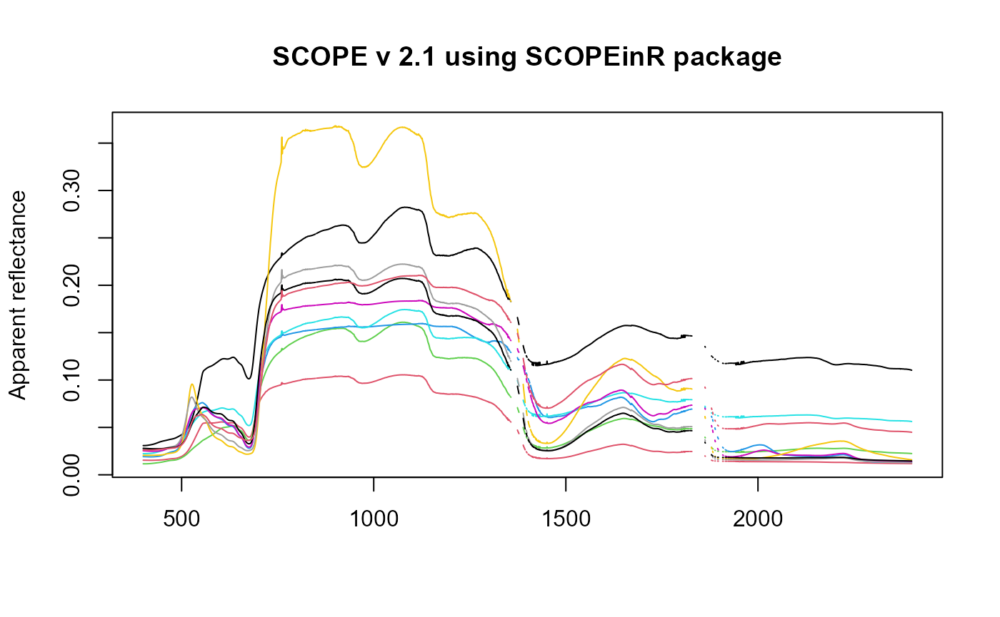
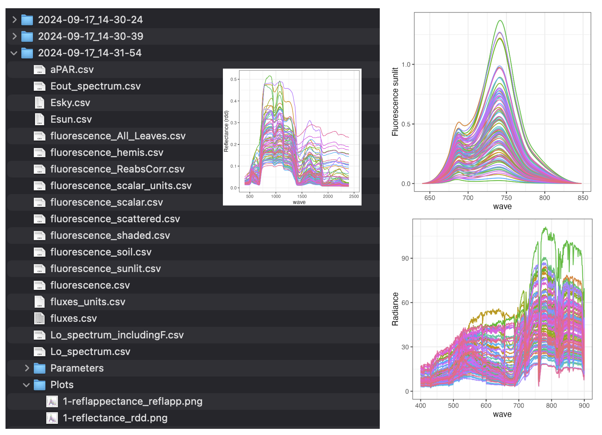

The SCOPEinR package
C.Camino
2026-08-26
SCOPEinR.Rmd#> Warning: package 'knitr' was built under R version 4.5.2
#> Warning: package 'kableExtra' was built under R version 4.5.31. Introduction
This tutorial provides an introduction to the SCOPEinR package, developed using R Markdown. The SCOPEinR package powers the online RT-Simulator, offering a user-friendly interface through a Shiny app that allows users to simulate canopy reflectance at the Top of Canopy (TOC) level. Additionally, it enables the simulation of reflectance and chlorophyll fluorescence emissions using the SCOPE model. For inter-comparison with other key radiative transfer (RT) models, it is recommended to install the ToolsRTM package alongside SCOPEinR.

Fig. 1 Simulations generated using the SCOPE model via the SCOPEinR package
The SCOPEinR package is designed to execute the Soil Canopy Observation, Photochemistry, and Energy fluxes (SCOPE) radiative transfer model. Originally developed in MATLAB by Van der Tol et al. (2009) and extended by Yang et al. (2020). SCOPEinR enables seamless integration of the SCOPE model within the R environment, offering users the flexibility to harness its capabilities for in-depth analysis.
ToolsRTM and SCOPEinR are both part
of RTM-Suite,
which also ships a point-and-click Shiny app (no code required) covering
the same models – see Apps/RTMs,
runnable locally via shiny::runApp("Apps/RTMs"). Both R
packages are distributed under GPL-3.0 (see each package’s own
LICENSE/THIRD_PARTY_LICENSES.md for the
per-model breakdown).
The repositories for accessing the R packages are as follows:
The ToolsRTM package: https://gitlab.com/caminoccg/toolsrtm
The SCOPEinR package: https://gitlab.com/caminoccg/scopeinr
The monorepo (both packages, their Python ports, tutorials, and the Shiny apps together): https://github.com/CCGCAM/RTM-Suite
Citation: Camino et al. (2024): DOI: 10.1109/IGARSS53475.2024.10642442
2. SCOPEinR package
2.1 Install from GitLab
if (!requireNamespace("remotes", quietly = TRUE)) install.packages("remotes")
if (!requireNamespace("SCOPEinR", quietly = TRUE)) remotes::install_gitlab("caminoccg/scopeinr")
library(SCOPEinR)Additionally, we recommend installing the ToolsRTM package. This package provides inversion methods, LUT functions, and relevant radiative transfer models for comparison with the SCOPE model (installation is not mandatory).
if (!requireNamespace("ToolsRTM", quietly = TRUE)) remotes::install_gitlab("caminoccg/toolsrtm")
library(ToolsRTM)2.2 How to run SCOPE model in R
Before running the SCOPE model in R, it’s essential to prepare the options file. This file contains various settings that customize the model’s behavior. To view the available options, you can use the following command:
| Order | Options | Value | Info |
|---|---|---|---|
| 1 | lite | 1 | Value 1 indicates the SCOPE will use the lite SCOPEversion |
| 2 | calc_fluorescence | 1 | Value 1 indicates that SCOPE will calculate thechlorophyll fluorescence in observation direction |
| 3 | calc_spectrum_planck | 1 | Value 1 SCOPE will calculate the spectrum of thermal radiation |
| 4 | calc_xanthophyllabs | 1 | Value 1 indicates the SCOPE includes simulation of reflectance dependence on de-epoxydation state |
| 5 | soilspectrum | 0 | Value 0 use a soil reflectance file and Value 1 SCOPE will calculate the soil spectrum using BSM model |
| 6 | Fluorescence_model | 0 | Value 0 empirical with sustained NPQ from Flexas data and Value 1 empirical with sigmoid for Kn and Value 2 uses Magnani 2012 model |
| 7 | applTcorr | 1 | Value 1 indicates that SCOPE will correct the Vcmax and rate constants for temperature in biochemical.m |
| 8 | verify | 1 | Value 1 indicates that SCOPE will check with field data |
| 9 | mSCOPE | 0 | Value 1 indicates that SCOPE wil use the mSCOPE considering vertical variations in the vegetation canopies |
| 10 | simulation | 0 | Value 0 the SCOPE will execute by individual runs based on LUT table and Value 1 for time series (uses text files with meteo input as time series) |
This command retrieves the options table from the SCOPEinR package and displays the first ten entries in a user-friendly format. Each entry outlines an option, its corresponding value, and a brief description of its purpose within the model.
Once you have reviewed the available options, you can proceed to create a Look-Up Table (LUT) for your SCOPE simulation. The LUT is a crucial component that allows the model to reference pre-calculated values for various parameters, streamlining the simulation process.
To create the LUT, you can use the following commands:
n.samples =100
inputLUT=SCOPEinR::inputsSCOPE
# create a LUT
LUT <-SCOPEinR::getLUT.SCOPE(inputLUT=inputLUT,nLUT=n.samples)
knitr::kable(head(LUT, 5))| N | Cab | Car | Anth | LMA | EWT | alpha | Cbrown | Cs | Prot | CBC | Cx | rho_thermal | tau_thermal | Vcmax25 | BallBerrySlope | BallBerry0 | Type | kV | Rdparam | Kn0 | Knalpha | Knbeta | Tyear | beta | kNPQs | qLs | stressfactor | fqe | spectrum | rss | rs_thermal | cs | rhos | lambdas | SMC | BSMBrightness | BSMlat | BSMlon | LAI | hc | LIDFa | LIDFb | TypeLidf | leafwidth | hspot | Cv | crowndiameter | zo | d | Cd | rb | CR | CD1 | Psicor | CSSOIL | rbs | rwc | z | Rin | Rli | Ta | p | ea | RH | u | Ca | Oa | startDate | endDate | LAT | LON | timezn | tts | tto | psi |
|---|---|---|---|---|---|---|---|---|---|---|---|---|---|---|---|---|---|---|---|---|---|---|---|---|---|---|---|---|---|---|---|---|---|---|---|---|---|---|---|---|---|---|---|---|---|---|---|---|---|---|---|---|---|---|---|---|---|---|---|---|---|---|---|---|---|---|---|---|---|---|---|---|---|---|---|
| 2.362733 | 78.89102 | 3.251115 | 2.1283673 | 0.1985231 | 0.0277819 | 43.6251882 | 0.5974519 | 0.2702431 | 0 | 0 | 0.9760460 | 0.01 | 0.01 | 25.60002 | 8.005108 | 0.01 | C3 | 0.64 | 0.015 | 2.48 | 2.83 | 0.114 | 15 | 0.51 | 0 | 1 | 1 | 0.01 | 1 | 500 | 0.06 | 1180 | 1800 | 1.55 | 25 | 0.5 | 25 | 45 | 2.1396909 | 1.659416 | -0.0421029 | 0.4141272 | 1 | 0.1 | 0 | 1 | 1 | 0.25 | 1.34 | 0.3 | 10 | 0.35 | 20.6 | 0.2 | 0.01 | 10 | 0 | 5 | 600 | 300 | 20 | 970 | 15 | 0.2894528 | 2 | 410 | 209 | 2018-08-01 | 2018-09-01 | 51.55 | 5.55 | 1 | 6.971054 | 23.70328 | 35.10155 |
| 3.864915 | 48.91944 | 8.155829 | 3.9219638 | 0.1417711 | 0.1829314 | 49.6014030 | 0.0248983 | 0.5988021 | 0 | 0 | 0.9698001 | 0.01 | 0.01 | 69.78263 | 19.514643 | 0.01 | C3 | 0.64 | 0.015 | 2.48 | 2.83 | 0.114 | 15 | 0.51 | 0 | 1 | 1 | 0.01 | 1 | 500 | 0.06 | 1180 | 1800 | 1.55 | 25 | 0.5 | 25 | 45 | 6.3529055 | 1.111979 | 0.1807867 | -0.3479634 | 1 | 0.1 | 0 | 1 | 1 | 0.25 | 1.34 | 0.3 | 10 | 0.35 | 20.6 | 0.2 | 0.01 | 10 | 0 | 5 | 600 | 300 | 20 | 970 | 15 | 0.9992738 | 2 | 410 | 209 | 2018-08-01 | 2018-09-01 | 51.55 | 5.55 | 1 | 11.683607 | 27.06327 | 106.32946 |
| 2.726931 | 48.22870 | 18.159972 | 1.0911191 | 0.1653431 | 0.1198232 | 30.6432645 | 0.0048417 | 0.7358376 | 0 | 0 | 0.0884846 | 0.01 | 0.01 | 180.76385 | 16.651130 | 0.01 | C3 | 0.64 | 0.015 | 2.48 | 2.83 | 0.114 | 15 | 0.51 | 0 | 1 | 1 | 0.01 | 1 | 500 | 0.06 | 1180 | 1800 | 1.55 | 25 | 0.5 | 25 | 45 | 5.9879357 | 3.935698 | -0.8067595 | 0.9303666 | 1 | 0.1 | 0 | 1 | 1 | 0.25 | 1.34 | 0.3 | 10 | 0.35 | 20.6 | 0.2 | 0.01 | 10 | 0 | 5 | 600 | 300 | 20 | 970 | 15 | 0.9870372 | 2 | 410 | 209 | 2018-08-01 | 2018-09-01 | 51.55 | 5.55 | 1 | 12.354996 | 20.10399 | 27.97176 |
| 4.149052 | 63.75834 | 24.793631 | 6.6960583 | 0.1783793 | 0.1499214 | 34.0635699 | 0.1313783 | 0.7135778 | 0 | 0 | 0.4983800 | 0.01 | 0.01 | 89.55907 | 15.961528 | 0.01 | C3 | 0.64 | 0.015 | 2.48 | 2.83 | 0.114 | 15 | 0.51 | 0 | 1 | 1 | 0.01 | 1 | 500 | 0.06 | 1180 | 1800 | 1.55 | 25 | 0.5 | 25 | 45 | 3.2875501 | 1.453983 | 0.9017805 | 0.3929089 | 1 | 0.1 | 0 | 1 | 1 | 0.25 | 1.34 | 0.3 | 10 | 0.35 | 20.6 | 0.2 | 0.01 | 10 | 0 | 5 | 600 | 300 | 20 | 970 | 15 | 0.4800463 | 2 | 410 | 209 | 2018-08-01 | 2018-09-01 | 51.55 | 5.55 | 1 | 4.235326 | 17.02276 | 93.50929 |
| 4.321402 | 58.56334 | 17.878338 | 0.3077664 | 0.1078821 | 0.1837909 | 0.0693492 | 0.0248171 | 0.1164929 | 0 | 0 | 0.3956894 | 0.01 | 0.01 | 96.14094 | 12.833691 | 0.01 | C3 | 0.64 | 0.015 | 2.48 | 2.83 | 0.114 | 15 | 0.51 | 0 | 1 | 1 | 0.01 | 1 | 500 | 0.06 | 1180 | 1800 | 1.55 | 25 | 0.5 | 25 | 45 | 0.5923029 | 1.705863 | -0.6745137 | -0.6778436 | 1 | 0.1 | 0 | 1 | 1 | 0.25 | 1.34 | 0.3 | 10 | 0.35 | 20.6 | 0.2 | 0.01 | 10 | 0 | 5 | 600 | 300 | 20 | 970 | 15 | 0.7622751 | 2 | 410 | 209 | 2018-08-01 | 2018-09-01 | 51.55 | 5.55 | 1 | 10.949675 | 26.60419 | 74.31114 |
In this example, n.samples is set to 10, indicating the number of samples you wish to generate. The inputLUT variable is assigned the default inputs for the SCOPE model, which are necessary for creating the LUT. The function getLUT.SCOPE then generates the LUT based on these inputs and the specified number of samples. The resulting LUT is displayed, showcasing the first five entries, which will be utilized in your SCOPE simulations.
By preparing the options file and creating the LUT, you set the foundation for effective and efficient SCOPE model runs in R.The LUT contains the inputs and their variants generated using a uniform distribution. This ensures that the model explores a broad range of parameter values, enhancing the robustness of the simulations. By leveraging this comprehensive LUT, you can achieve more accurate and representative results from your SCOPE model analysis.
2.3 Updating the LUT according to new ranges
In this section, we will update the Look-Up Table (LUT) by generating values for the Vcmax25 parameter, which represents the velocity of carboxylation of the enzyme RUbisCO at 25 degrees, and creating a correlation between Cab (chlorophyll content) and Vcmax25. The following code performs these tasks:
Generate Vcmax25 Values: We create random values for the Vcmax25 parameter using the runif function from the stats package. This function generates values uniformly distributed between 5 and 90.
Set Seed for Randomness: A random seed is established using the runif function to ensure that the generated values can be reproduced in future runs. This is critical for maintaining consistency in simulations.
-
Generate a correlation dataset: The getCor function from the ToolsRTM package is called to create a correlation structure for the variables Cab and Vcmax25. This function takes several arguments:
n:inputs: Indicates the number of input variables.n.seed: Uses the previously set random seed.distribution: Specifies the type of distribution to be used; the options are ‘Uniform’ or ‘Gauss’.nLUT: The number of samples to generate.rho: Sets the correlation coefficient for the generated variables (0.99 below).Varnames: A vector containing the names of the variables (Cab and Vcmax25).MinRangeandMaxRange: Specify the minimum and maximum ranges for each variable.
LUT$Vcmax25 = stats::runif(n.samples,min = 5 ,max=90 )
n.seed <- round(runif(1,1,n.samples),0)
pigments<-ToolsRTM::getCor(n_inputs = 2,setseed = n.seed,distribution = 'Uniform',nLUT = n.samples, rho = 0.99,
Varnames = c('Cab','Vcmax25'),MinRange = c(0.5,5), MaxRange = c(95,90))
#> Generating a Uniform distribution for all correlated inputs ...
LUT$Cab <-pigments$LUT$Cab
LUT$Vcmax25 <-pigments$LUT$Vcmax25
# Create the ggplot
ggplot(pigments$LUT, aes(x = Cab, y = Vcmax25)) +
geom_point(alpha = 0.6) +
labs(title = "Relationship Between Chlorophyll Content (Cab) and Vcmax25",
x = "Chlorophyll Content (Cab)",
y = "Vcmax25") +
theme_bw()
In this example a scatter plot is generated using the
ggplot2 package to visualize the relationship between
Cab and Vcmax25. The aes function
maps the Cab values to the x-axis and Vcmax25
values to the y-axis. The geom_point function adds points
to the plot, with alpha set to 0.6 for transparency. The
plot is titled “Relationship Between Chlorophyll Content (Cab) and
Vcmax25,” with appropriately labeled axes. The theme_bw()
function is applied to give the plot a clean, minimalistic
appearance.
This process allows for a detailed examination of how changes in chlorophyll content correlate with variations in Vcmax25, providing valuable insights for further analysis in your SCOPE model simulations.
2.4 Run the SCOPE model in parallel
To simulate canopy reflectance using the SCOPE model, you need to define a range of inputs that describe plant traits, canopy structure, and environmental conditions. In this example, we will focus on generating a Look-Up Table (LUT) for SCOPE and running the model in parallel. The LUT will contain a range of values for the key input parameters, which will be used to simulate various outputs such as apparent reflectance.
In SCOPE, you can configure the leaf and canopy models and choose different radiative transfer models such as fluspect-CX (for leaf optical properties) and fourSAIL (for canopy structure). Below is an example of running SCOPE in parallel with the default settings and using the SCOPEinR package.
db.sims <-SCOPEinR::get.SCOPE.parallel(LUT=LUT,options.SCOPE=table.with.opts,optipar=SCOPEinR::optipar2017.ProspectD,
leaf.model='fluspect-CX',canopy.model='fourSAIL', parallel = T,
get.outputs='ALL', get.plots = F, get.csv =F, n.cores = 3)
#> Executing SCOPE 2.1. version ...Total simulations: 100 Total execution time: 36.0409
wave_<-db.sims[[1]]$data.spectral$wlS[1:2001]
matrix.reflapp <- sapply(seq_along(db.sims), function(i) db.sims[[i]]$data.rad$reflapp[1:2001])
# Assuming matrix.refl is your matrix
ncols <- sample(ncol(matrix.reflapp), n.samples/10)
matplot(wave_,matrix.reflapp[,ncols], type = "l", lty = 1, col = 1:ncol(matrix.reflapp), xlab = "", ylab = "Apparent reflectance", main = "SCOPE v 2.1 using SCOPEinR package")
2.5 Export the simulations and SCOPE outputs
The get.SCOPE.outputs function is designed to export all
the results from the SCOPE simulations to your disk. By specifying the
output folder, the function will save both the primary simulation
outputs and any additional parameters that you choose to extract. The
following code demonstrates how to export the outputs to a specified
directory:
the get.SCOPE.outputs function includes the
get.more.inputs parameter, which allows you to specify
additional inputs/outputs to be saved. In the example above we extract
extra outputs such as:
Reflectance (refl)
LIDF angles (lidf)
LIDF-b parameter (LIDFb)
Ft-Fo ratio (Ft_Fo) (representing fluorescence efficiency)
TOC hemispherical-directional reflectance (rdo)
All simulation outputs, including these additional variables, will be saved in the specified folder on your disk for further analysis. By setting get.plots = TRUE, the function will also generate and save relevant plots alongside the data.

Fig. 2 Directory containing all outputs generated by the SCOPEinR package.
3. Inputs and ranges used in the SCOPE model
Below are tables summarizing the key inputs and their respective ranges utilized in each RTMs.
3.1 FLUSPECT model (Leaf radiative transfer model)
| Name | Parameter | Units | Min | Max | Default Value |
|---|---|---|---|---|---|
| Fluorescence Quantum Efficiency | fqe |
|
0.01 | 5e-02 | 0.020 |
| Chlorophyll Content | Cab | μg cm² | 0.01 | 1e+02 | 50.000 |
| Carotenoid Content | Car | μg cm² | 0.01 | 4e+01 | 20.000 |
| Anthocyanin Content | Anth | μg cm² | 0.01 | 7e+00 | 2.000 |
| Leaf Senescence | Cs |
|
0.00 | 1e+00 | 0.010 |
| Violaxanthin - Zeaxanthin Transition Status | Cx |
|
0.00 | 1e+00 | 0.100 |
| Water Content | EWT | g cm² | 0.00 | 5e-02 | 0.010 |
| Dry Matter Content | LMA | g cm² | 0.00 | 5e-02 | 0.005 |
| Mesophyll Structure Parameter | N |
|
1.00 | 4e+00 | 2.500 |
3.2 FourSAIL model (Canopy radiative transfer model)
| Name | Parameter | Units | Min | Max | Default Value |
|---|---|---|---|---|---|
| Leaf Area Index | LAI | m²/m² | 0 | 8 | 4.0 |
| leaf inclination distribution function a | LIDFa | deg | -1 | 1 | 0.5 |
| Type of leaf inclination distribution function b | LIDFb | deg | -1 | 1 | 0.5 |
| Hotspot | Hotspot |
|
0 | 1 | 0.5 |
| Sun zeith angle | tts | deg | 0 | 90 | 0.0 |
| Observer zeith angle | tto | deg | 0 | 90 | 30.0 |
| Azimuth Sun / Observer | psi | deg | 0 | 360 | 15.0 |
| soil factor | psoil |
|
0 | 1 | 0.5 |
4. References
If you use any of the RTM models integrate into SCOPEinR package, please cite the following references:
The official SCOPE’s github is available at https://github.com/Christiaanvandertol/SCOPE
Peiqi Yang, Elizaveta Prikaziuk, Wout Verhoef, and Christiaan van der Tol. SCOPE 2.0: A model to simulate vegetated land surface fluxes and satellite signals. Geosci. Model Dev., 14:4697–4712, 2021. https://doi.org/10.5194/gmd-14-4697-2021.
Christiaan van der Tol, Wouter Verhoef, Joost Timmermans, Adriaan Verhoef, and Zoltan Su. An integrated model of soil-canopy spectral radiances, photosynthesis, fluorescence, temperature and energy balance. Biogeosciences, 6(12):3109–3129, 2009. https://doi.org/10.5194/bg-6-3109-2009.
Other Main References:
G.James Collatz, J.Timothy Ball, Cyril Grivet, and Joseph A. Berry. Physiological and environmental regulation of stomatal conductance, photosynthesis, and transpiration: A model that includes a laminar boundary layer. Agric. For. Meteorol., 54(2-4):107–136, April 1991.
G.J. Collatz, M. Ribas-Carbo, and J.A. Berry. Coupled photosynthesis-stomatal conductance model for leaves of C4 plants. Aust. J. Plant Physiol., 19(5):519, 1992.
Albert Porcar-Castell. A high-resolution portrait of the annual dynamics of photochemical and non-photochemical quenching in needles of Pinus sylvestris. Physiol. Plant., 143(2):139–153, October 2011.
G. Schaepman-Strub, M.E. Schaepman, T.H. Painter, S. Dangel, and J.V. Martonchik. Reflectance quantities in optical remote sensing: Definitions and case studies. Remote Sens. Environ., 103(1):27–42, 2006.
Christiaan van der Tol, Micol Rossini, Sergio Cogliati, Wouter Verhoef, Roberto Colombo, Uwe Rascher, and Gina Mohammed. A model and measurement comparison of diurnal cycles of sun-induced chlorophyll fluorescence of crops. Remote Sens. Environ., 186:663–677, December 2016.
Wout Verhoef and Nationaal Lucht- en Ruimtevaartlaboratorium (Netherlands). Theory of radiative transfer models applied in optical remote sensing of vegetation canopies, 1998. ISBN 9054858044.
Wouter Verhoef, Christiaan van der Tol, and Elizabeth M. Middleton. Hyperspectral radiative transfer modeling to explore the combined retrieval of biophysical parameters and canopy fluorescence from FLEX–Sentinel-3 tandem mission multi-sensor data. Remote Sens. Environ., 204(August 2016):942–963, 2018.
Nastassia Vilfan, Christiaan van der Tol, Onno Muller, Uwe Rascher, and Wouter Verhoef. Fluspect-B: A model for leaf fluorescence, reflectance, and transmittance spectra. Remote Sens. Environ., 186:596–615, 2016.
Peiqi Yang, Wout Verhoef, and Christiaan van der Tol. The mSCOPE model: A simple adaptation to the SCOPE model to describe reflectance, fluorescence, and photosynthesis of vertically heterogeneous canopies. Remote Sens. Environ., 201:1–11, November 2017.
Xinyou Yin, Jeremy Harbinson, and Paul C. Struik. Mathematical review of literature to assess alternative electron transports and interphotosystem excitation partitioning of steady-state C3 photosynthesis under limiting light. Plant, Cell Environ., 29(9):1771–1782, September 2006.
Xinyou Yin and Paul C. Struik. Crop systems biology as an avenue to bridge applied crop science and fundamental plant biology. In Proc. - 2012 IEEE 4th Int. Symp. Plant Growth Model. Simulation, Vis. Appl. PMA 2012, pages 15–17. IEEE, October 2012.
C.V. van der Tol, J.A. Berry, P.K.E. Campbell, and U. Rascher. Models of fluorescence and photosynthesis for interpreting measurements of solar-induced chlorophyll fluorescence. J. Geophys. Res. Biogeosciences, 119(12):2312–2327, 2014.